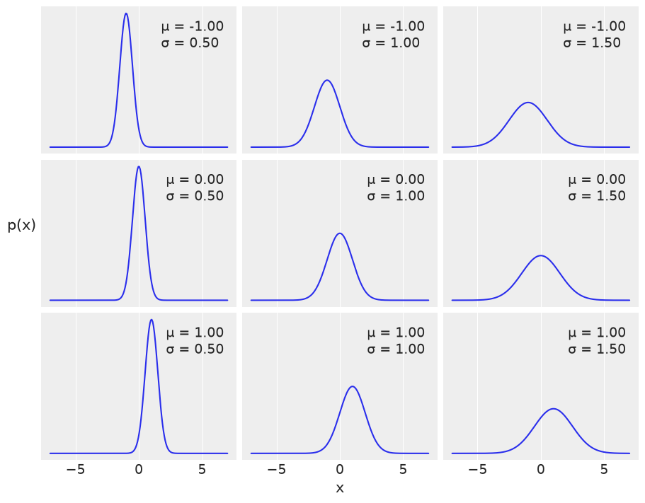
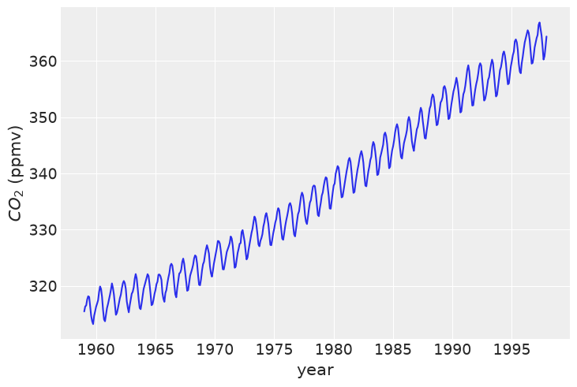
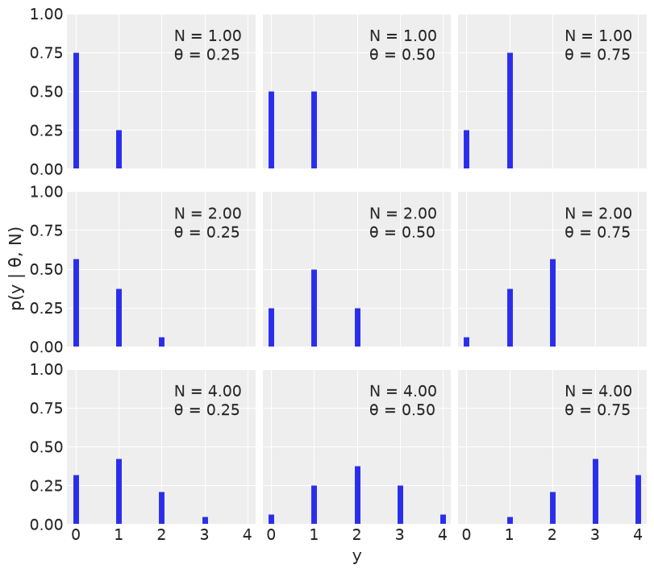
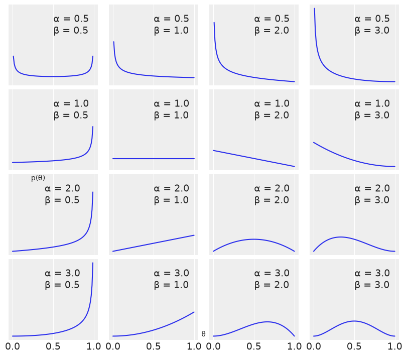
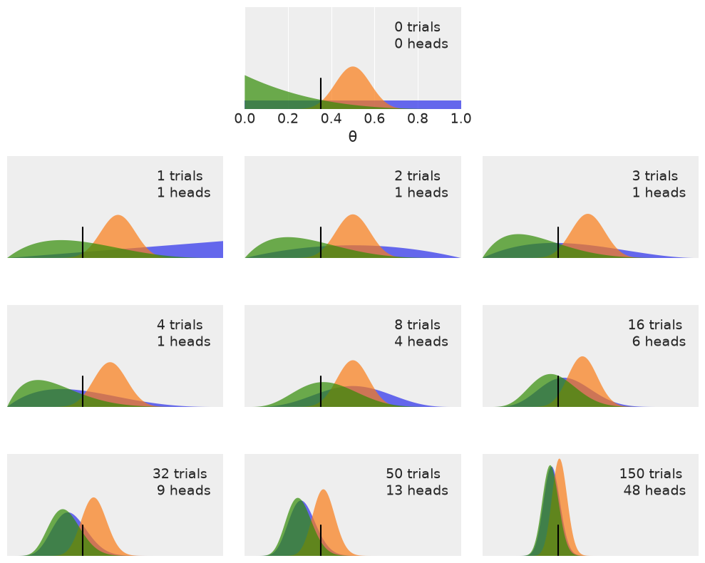
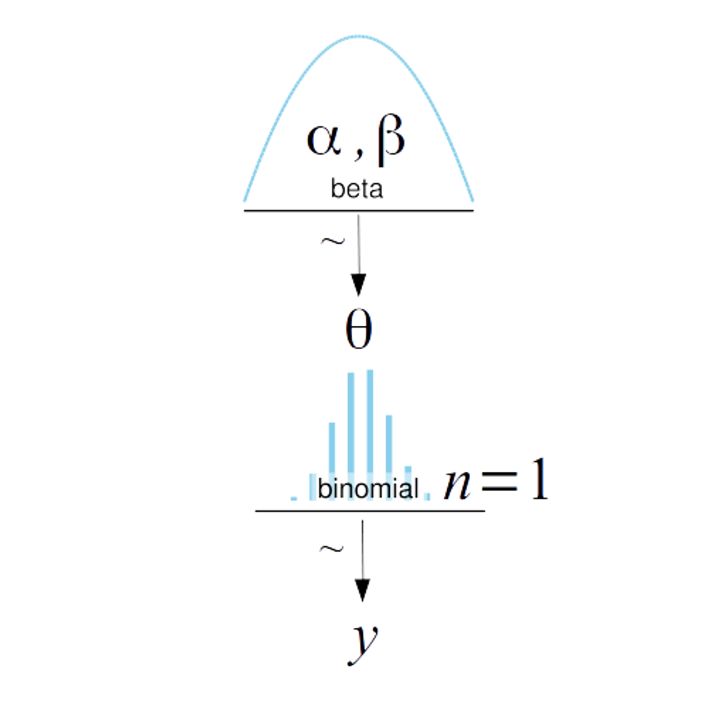
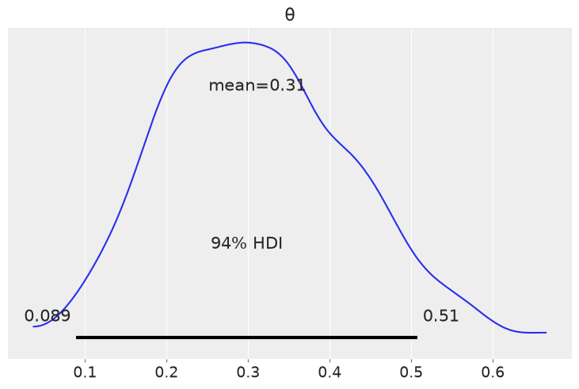
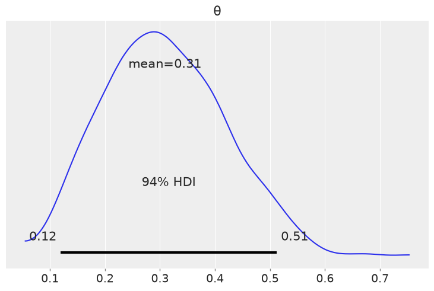
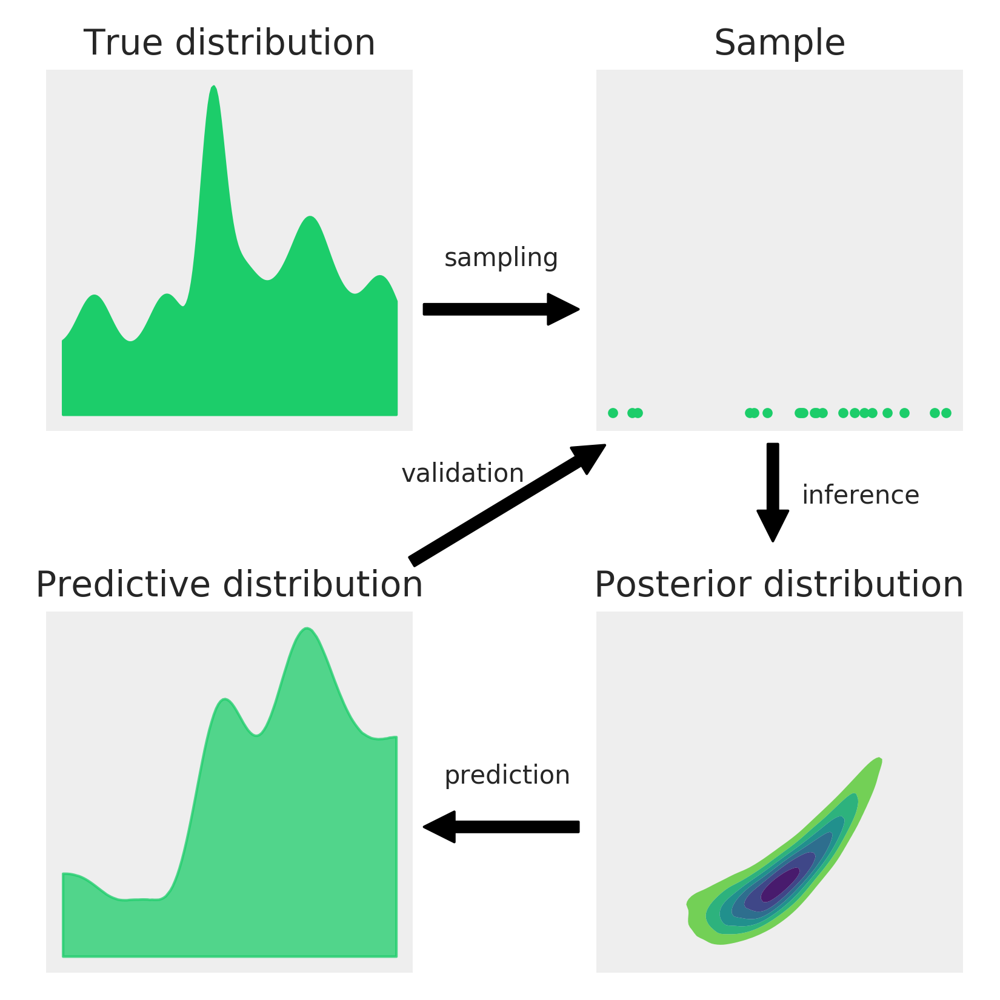

Chapter 1. Thinking Probabilistically#
import os
import warnings
import arviz as az
import matplotlib.pyplot as plt
import pandas as pd
import jax.numpy as jnp
from jax import random
import numpyro
import numpyro.distributions as dist
seed=1234
if "SVG" in os.environ:
%config InlineBackend.figure_formats = ["svg"]
warnings.formatwarning = lambda message, category, *args, **kwargs: "{}: {}\n".format(
category.__name__, message
)
az.style.use("arviz-darkgrid")
numpyro.set_platform("cpu") # or "gpu", "tpu" depending on system
/home/runner/work/bap-numpyro/bap-numpyro/.venv/lib/python3.13/site-packages/arviz/__init__.py:50: FutureWarning:
ArviZ is undergoing a major refactor to improve flexibility and extensibility while maintaining a user-friendly interface.
Some upcoming changes may be backward incompatible.
For details and migration guidance, visit: https://python.arviz.org/en/latest/user_guide/migration_guide.html
warn(
/home/runner/work/bap-numpyro/bap-numpyro/.venv/lib/python3.13/site-packages/tqdm/auto.py:21: TqdmWarning: IProgress not found. Please update jupyter and ipywidgets. See https://ipywidgets.readthedocs.io/en/stable/user_install.html
from .autonotebook import tqdm as notebook_tqdm
μ = 0.
σ = 1.
x = dist.Normal(μ, σ).sample(random.PRNGKey(0), (3,))
x
Array([ 1.6226422 , 2.0252647 , -0.43359444], dtype=float32)
mu_params = [-1, 0, 1]
sd_params = [0.5, 1, 1.5]
x = jnp.linspace(-7, 7, 200)
_, ax = plt.subplots(len(mu_params), len(sd_params), sharex=True, sharey=True,
figsize=(9, 7), constrained_layout=True)
for i in range(3):
for j in range(3):
mu = mu_params[i]
sd = sd_params[j]
y = jnp.exp(dist.Normal(mu, sd).log_prob(x))
ax[i,j].plot(x, y)
ax[i,j].plot([], label="μ = {:3.2f}\nσ = {:3.2f}".format(mu, sd), alpha=0)
ax[i,j].legend(loc=1)
ax[2,1].set_xlabel('x')
ax[1,0].set_ylabel('p(x)', rotation=0, labelpad=20)
ax[1,0].set_yticks([])
[]

# data = np.genfromtxt('../data/mauna_loa_CO2.csv', delimiter=',')
data = pd.read_csv('../data/mauna_loa_CO2.csv', delimiter=',', header=None, dtype=float)
data
| 0 | 1 | |
|---|---|---|
| 0 | 1959.000 | 315.42 |
| 1 | 1959.083 | 316.31 |
| 2 | 1959.167 | 316.50 |
| 3 | 1959.250 | 317.56 |
| 4 | 1959.333 | 318.13 |
| ... | ... | ... |
| 463 | 1997.583 | 362.57 |
| 464 | 1997.667 | 360.24 |
| 465 | 1997.750 | 360.83 |
| 466 | 1997.833 | 362.49 |
| 467 | 1997.917 | 364.34 |
468 rows × 2 columns
plt.plot(data[0], data[1])
plt.xlabel('year')
plt.ylabel('$CO_2$ (ppmv)')
Text(0, 0.5, '$CO_2$ (ppmv)')

n_params = [1, 2, 4] # Number of trials
p_params = [0.25, 0.5, 0.75] # Probability of success
x = jnp.arange(0, max(n_params) + 1)
f , ax = plt.subplots(len(n_params), len(p_params), sharex=True, sharey=True,
figsize=(8, 7), constrained_layout=True)
for i in range(len(n_params)):
for j in range(len(p_params)):
n = n_params[i]
p = p_params[j]
y = jnp.exp(dist.Binomial(n, p).log_prob(x))
ax[i,j].vlines(x, 0, y, colors='C0', lw=5)
ax[i,j].set_ylim(0, 1)
ax[i,j].plot(0, 0, label="N = {:3.2f}\nθ = {:3.2f}".format(n,p), alpha=0)
ax[i,j].legend()
ax[2,1].set_xlabel('y')
ax[1,0].set_ylabel('p(y | θ, N)')
ax[0,0].set_xticks(x)

params = [0.5, 1, 2, 3]
x = jnp.linspace(0, 1, 100)
f, ax = plt.subplots(len(params), len(params), sharex=True, sharey=True,
figsize=(8, 7), constrained_layout=True)
for i in range(4):
for j in range(4):
a = params[i]
b = params[j]
y = jnp.exp(dist.Beta(a, b).log_prob(x))
ax[i,j].plot(x, y)
ax[i,j].plot(0, 0, label="α = {:2.1f}\nβ = {:2.1f}".format(a, b), alpha=0)
ax[i,j].legend()
ax[1,0].set_yticks([])
ax[1,0].set_xticks([0, 0.5, 1])
f.text(0.5, 0.05, 'θ', ha='center')
f.text(0.07, 0.5, 'p(θ)', va='center', rotation=0)
Text(0.07, 0.5, 'p(θ)')

plt.figure(figsize=(10, 8))
n_trials = [0, 1, 2, 3, 4, 8, 16, 32, 50, 150]
data = [0, 1, 1, 1, 1, 4, 6, 9, 13, 48]
theta_real = 0.35
beta_params = [(1, 1), (20, 20), (1, 4)]
x = jnp.linspace(0, 1, 200)
for idx, N in enumerate(n_trials):
if idx == 0:
plt.subplot(4, 3, 2)
plt.xlabel('θ')
else:
plt.subplot(4, 3, idx+3)
plt.xticks([])
y = data[idx]
for (a_prior, b_prior) in beta_params:
p_theta_given_y = jnp.exp(dist.Beta(a_prior + y, b_prior + N - y).log_prob(x))
plt.fill_between(x, 0, p_theta_given_y, alpha=0.7)
plt.axvline(theta_real, ymax=0.3, color='k')
plt.plot(0, 0, label=f'{N:4d} trials\n{y:4d} heads', alpha=0)
plt.xlim(0, 1)
plt.ylim(0, 12)
plt.legend()
plt.yticks([])
plt.tight_layout()
UserWarning: The figure layout has changed to tight


az.plot_posterior({'θ': dist.Beta(5, 11).sample(random.PRNGKey(seed), (1000,))})
<Axes: title={'center': 'θ'}>

with numpyro.handlers.seed(rng_seed=seed):
N = 1000 # Samples
b = numpyro.sample("b", dist.Beta(5, 11).expand([N]))
az.plot_posterior({'θ': b})
<Axes: title={'center': 'θ'}>

